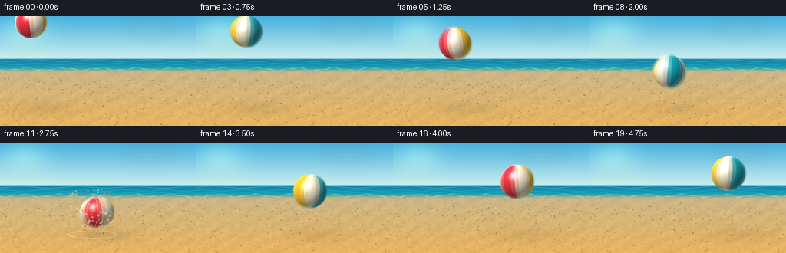
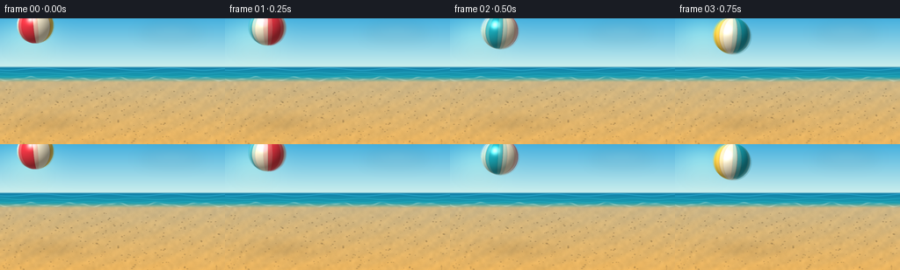
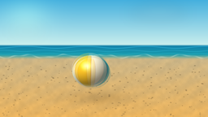
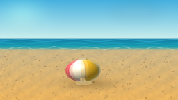
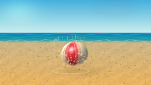
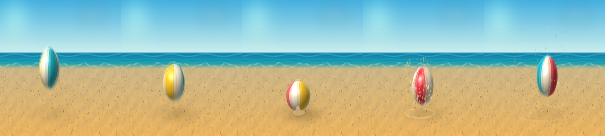

CODING AGENTS AS PIXEL WORLD MODELS
traex/DeepSeek-V4.1-Flash · phygen_030
点击播放 · 原生 RGB 像素
逐轮保存的候选
回放视频、检查图与代码变化。
每份候选均可单独播放。实际图片检查记录在下方工具轨迹中。
候选 01播放与检查图
点击播放 · 原生 RGB 像素

展开代码变化
--- 上一保存版本
+++ 本次保存版本
@@ -0,0 +1,387 @@
+from pathlib import Path
+import math
+
+import numpy as np
+from PIL import Image, ImageDraw, ImageFilter
+
+from artifact_io import save
+
+
+ROOT = Path(__file__).resolve().parent
+SPEC = __import__("json").loads((ROOT / "task_spec.json").read_text())
+W = SPEC["width"]
+H = SPEC["height"]
+N = SPEC["frames"]
+FPS = SPEC["fps"]
+SS = 3
+RW = W * SS
+RH = H * SS
+
+HORIZON = 55.0
+SHORE = 69.0
+GROUND_Y = 119.2
+IMPACT_T = 2.48
+IMPACT_X = 119.0
+
+BALL_PANELS = np.array(
+ [
+ [237, 53, 67],
+ [255, 244, 213],
+ [255, 196, 39],
+ [255, 244, 213],
+ [24, 168, 184],
+ [255, 244, 213],
+ ],
+ dtype=np.float32,
+)
+
+
+def smoothstep(edge0, edge1, value):
+ u = np.clip((value - edge0) / (edge1 - edge0), 0.0, 1.0)
+ return u * u * (3.0 - 2.0 * u)
+
+
+def ball_state(t):
+ radius = 20.8 + 1.8 * (t / (N / FPS))
+ x = 40.0 + 34.0 * t - 0.9 * t * t
+ if t <= IMPACT_T:
+ y = 8.0 + 6.0 * t + 13.05 * t * t
+ else:
+ dt = t - IMPACT_T
+ y = 103.1 - 48.0 * dt + 9.0 * dt * dt
+ impact = max(0.0, 1.0 - abs(t - IMPACT_T) / 0.42)
+ squash = impact ** 1.35
+ rx = radius * (1.0 + 0.17 * squash)
+ ry = radius * (1.0 - 0.29 * squash)
+ return {
+ "x": x,
+ "y": y,
+ "r": radius,
+ "rx": rx,
+ "ry": ry,
+ "squash": squash,
+ "spin": 1.15 - 4.7 * t,
+ "roll": -0.075 * squash + 0.025 * math.sin(1.2 * t),
+ }
+
+
+def make_sand_texture():
+ rng = np.random.default_rng(87123)
+ small = rng.normal(0.0, 1.0, (RH // 10 + 2, RW // 10 + 2))
+ small = np.clip(128.0 + small * 35.0, 0, 255).astype(np.uint8)
+ macro = np.asarray(
+ Image.fromarray(small).resize((RW, RH), Image.Resampling.BICUBIC),
+ dtype=np.float32,
+ )
+ fine = rng.normal(0.0, 1.0, (RH, RW)).astype(np.float32)
+ return (macro - 128.0) * 0.11 + fine * 2.6
+
+
+def render_background(t):
+ yy, xx = np.mgrid[0:RH, 0:RW].astype(np.float32)
+ x = xx / SS
+ y = yy / SS
+
+ sky_t = np.clip(y / HORIZON, 0.0, 1.0)
+ sky_top = np.array([69, 176, 222], dtype=np.float32)
+ sky_low = np.array([201, 238, 237], dtype=np.float32)
+ rgb = sky_top[None, None, :] * (1.0 - sky_t[..., None]) + sky_low[None, None, :] * sky_t[..., None]
+
+ glow = np.exp(-(((x - 32.0) / 38.0) ** 2 + ((y - 18.0) / 29.0) ** 2) * 1.7)
+ rgb += glow[..., None] * np.array([31.0, 25.0, 9.0], dtype=np.float32)
+
+ ocean_alpha = smoothstep(HORIZON - 0.7, HORIZON + 1.8, y)
+ ocean_t = np.clip((y - HORIZON) / (SHORE + 7.0 - HORIZON), 0.0, 1.0)
+ ocean_top = np.array([18, 126, 169], dtype=np.float32)
+ ocean_low = np.array([29, 178, 178], dtype=np.float32)
+ ocean = ocean_top[None, None, :] * (1.0 - ocean_t[..., None]) + ocean_low[None, None, :] * ocean_t[..., None]
+ rgb = rgb * (1.0 - ocean_alpha[..., None]) + ocean * ocean_alpha[..., None]
+
+ wave_a = np.exp(-((y - (58.0 + 1.25 * np.sin(x * 0.085 + 0.8 + t * 0.55))) / 0.42) ** 2)
+ wave_b = np.exp(-((y - (62.4 + 0.85 * np.sin(x * 0.12 - 1.1 - t * 0.38))) / 0.30) ** 2)
+ wave_c = np.exp(-((y - (66.0 + 0.55 * np.sin(x * 0.17 + t * 0.28))) / 0.24) ** 2)
+ wave = np.clip(wave_a * 0.20 + wave_b * 0.15 + wave_c * 0.12, 0.0, 1.0)
+ rgb += wave[..., None] * np.array([128.0, 187.0, 190.0], dtype=np.float32)
+
+ sand_alpha = smoothstep(SHORE - 3.0, SHORE + 4.5, y)
+ sand_t = np.clip((y - SHORE) / (H - SHORE), 0.0, 1.0)
+ sand_far = np.array([203, 182, 137], dtype=np.float32)
+ sand_near = np.array([235, 181, 96], dtype=np.float32)
+ sand = sand_far[None, None, :] * (1.0 - sand_t[..., None]) + sand_near[None, None, :] * sand_t[..., None]
+
+ ripple = 0.5 + 0.5 * np.sin(x * 0.19 + y * 0.37 + 2.6 * np.sin(x * 0.023))
+ sand += (ripple[..., None] - 0.5) * np.array([8.0, 4.0, -1.0], dtype=np.float32)
+ sand += SAND_TEXTURE[..., None] * np.array([0.8, 0.65, 0.42], dtype=np.float32)
+ rgb = rgb * (1.0 - sand_alpha[..., None]) + sand * sand_alpha[..., None]
+
+ shore_line = SHORE + 1.7 * np.sin(x * 0.13 + 0.3 + t * 0.18) + 0.7 * np.sin(x * 0.31 - t * 0.25)
+ foam = np.exp(-((y - shore_line) / 0.70) ** 2)
+ foam *= 0.52 + 0.28 * np.sin(x * 0.41 + t * 0.7)
+ foam = np.clip(foam, 0.0, 1.0)
+ rgb = rgb * (1.0 - 0.52 * foam[..., None]) + np.array([237.0, 242.0, 224.0]) * (0.52 * foam[..., None])
+
+ img = Image.fromarray(np.clip(rgb, 0, 255).astype(np.uint8), "RGB")
+
+ cloud_layer = Image.new("RGBA", (RW, RH), (0, 0, 0, 0))
+ cloud_draw = ImageDraw.Draw(cloud_layer)
+ cloud_draw.ellipse(
+ (RW * 0.62, RH * 0.08, RW * 0.90, RH * 0.15),
+ fill=(255, 255, 250, 34),
+ )
+ cloud_draw.ellipse(
+ (RW * 0.69, RH * 0.055, RW * 0.84, RH * 0.11),
+ fill=(255, 255, 250, 28),
+ )
+ cloud_draw.ellipse(
+ (RW * 0.05, RH * 0.24, RW * 0.21, RH * 0.285),
+ fill=(255, 255, 250, 20),
+ )
+ cloud_layer = cloud_layer.filter(ImageFilter.GaussianBlur(8.0 * SS))
+ img = Image.alpha_composite(img.convert("RGBA"), cloud_layer).convert("RGB")
+
+ detail = ImageDraw.Draw(img, "RGBA")
+ rng = np.random.default_rng(4421)
+ count = 270
+ px = rng.uniform(0, W, count)
+ py = rng.uniform(79.0, H, count)
+ for index, (sx, sy) in enumerate(zip(px, py)):
+ shade = int(42 + 42 * ((sy - 79.0) / (H - 79.0)))
+ radius = 0.45 + 0.65 * rng.random()
+ color = (shade, int(shade * 0.78), int(shade * 0.50), 52)
+ cx, cy = sx * SS, sy * SS
+ rr = radius * SS
+ detail.ellipse((cx - rr, cy - rr * 0.55, cx + rr, cy + rr * 0.55), fill=color)
+
+ return np.asarray(img, dtype=np.float32)
+
+
+def apply_shadow(bg, state):
+ yy, xx = np.mgrid[0:RH, 0:RW].astype(np.float32)
+ x = xx / SS
+ y = yy / SS
+ height = max(0.0, GROUND_Y - state["y"])
+ sx = state["x"] + 7.0 + height * 0.085
+ sy = GROUND_Y + 1.0
+ rx = state["r"] * (1.08 + height / 260.0)
+ ry = 5.0 + height / 46.0
+ dist = ((x - sx) / rx) ** 2 + ((y - sy) / ry) ** 2
+ contact = 0.12 + 0.31 * state["squash"]
+ alpha = contact * np.exp(-0.5 * dist)
+ alpha *= (1.0 - smoothstep(132.0, 142.0, y))
+ bg *= (1.0 - 0.62 * alpha[..., None])
+ bg += np.array([20.0, 12.0, 2.0], dtype=np.float32) * alpha[..., None]
+
+
+def render_ball_sample(cx, cy, rx, ry, spin, roll):
+ x0 = max(0, int(math.floor((cx - rx - 2.0) * SS)))
+ x1 = min(RW, int(math.ceil((cx + rx + 2.0) * SS)))
+ y0 = max(0, int(math.floor((cy - ry - 2.0) * SS)))
+ y1 = min(RH, int(math.ceil((cy + ry + 2.0) * SS)))
+ if x0 >= x1 or y0 >= y1:
+ return None
+
+ yy, xx = np.mgrid[y0:y1, x0:x1].astype(np.float32)
+ x = (xx + 0.5) / SS
+ y = (yy + 0.5) / SS
+
+ cos_roll = math.cos(roll)
+ sin_roll = math.sin(roll)
+ dx = (x - cx) / rx
+ dy = (y - cy) / ry
+ rdx = cos_roll * dx - sin_roll * dy
+ rdy = sin_roll * dx + cos_roll * dy
+ rr = rdx * rdx + rdy * rdy
+ mask = rr <= 1.0
+ if not np.any(mask):
+ return None
+
+ zz = np.sqrt(np.clip(1.0 - rr, 0.0, 1.0))
+ nx = rdx
+ ny = rdy
+ nz = zz
+
+ cos_s = math.cos(spin)
+ sin_s = math.sin(spin)
+ tx = cos_s * nx + sin_s * nz
+ tz = -sin_s * nx + cos_s * nz
+ tilt = 0.10
+ ty = math.cos(tilt) * ny - math.sin(tilt) * tz
+ tz2 = math.sin(tilt) * ny + math.cos(tilt) * tz
+
+ lon = np.arctan2(tx, tz2)
+ sector = (2.0 * math.pi) / 6.0
+ u = (lon + 2.0 * math.pi) / sector
+ panel = np.floor(u).astype(np.int32) % 6
+ edge = np.abs(u - np.round(u))
+ seam = np.clip(1.0 - edge / 0.033, 0.0, 1.0)
+
+ base = BALL_PANELS[panel]
+ cap = smoothstep(0.91, 0.985, np.abs(ty))
+ base = base * (1.0 - 0.70 * cap[..., None]) + np.array([255.0, 244.0, 220.0]) * (0.70 * cap[..., None])
+ base = base * (1.0 - 0.48 * seam[..., None]) + np.array([146.0, 49.0, 43.0]) * (0.48 * seam[..., None])
+
+ light = np.array([-0.48, -0.61, 0.63], dtype=np.float32)
+ light /= np.linalg.norm(light)
+ ndl = np.clip(nx * light[0] + ny * light[1] + nz * light[2], 0.0, 1.0)
+ shade = 0.48 + 0.66 * ndl
+
+ half = light + np.array([0.0, 0.0, 1.0], dtype=np.float32)
+ half /= np.linalg.norm(half)
+ ndh = np.clip(nx * half[0] + ny * half[1] + nz * half[2], 0.0, 1.0)
+ spec = (ndh ** 46) * 0.78
+
+ rim = np.clip((1.0 - nz) ** 3.2, 0.0, 1.0)
+ bounce = np.clip(ny, 0.0, 1.0) * 0.055
+ color = base * shade[..., None]
+ color += spec[..., None] * np.array([255.0, 249.0, 225.0])
+ color += rim[..., None] * np.array([28.0, 67.0, 77.0])
+ color += bounce[..., None] * np.array([180.0, 107.0, 40.0])
+ color = np.clip(color, 0.0, 255.0)
+
+ color[~mask] = 0.0
+ alpha = mask.astype(np.float32)
+ return (y0, y1, x0, x1), color, alpha
+
+
+def render_ball_blur(t):
+ offsets = (-0.040, 0.0, 0.040)
+ weights = (0.23, 0.54, 0.23)
+ alpha_acc = np.zeros((RH, RW), dtype=np.float32)
+ color_acc = np.zeros((RH, RW, 3), dtype=np.float32)
+
+ for offset, weight in zip(offsets, weights):
+ sample_t = min(N / FPS, max(0.0, t + offset))
+ state = ball_state(sample_t)
+ rendered = render_ball_sample(
+ state["x"],
+ state["y"],
+ state["rx"],
+ state["ry"],
+ state["spin"],
+ state["roll"],
+ )
+ if rendered is None:
+ continue
+ (y0, y1, x0, x1), color, alpha = rendered
+ alpha_acc[y0:y1, x0:x1] += alpha * weight
+ color_acc[y0:y1, x0:x1] += color * alpha[..., None] * weight
+
+ color = color_acc / np.maximum(alpha_acc[..., None], 1e-6)
+ return color, alpha_acc
+
+
+def draw_impact_fx(img, t):
+ dt = t - IMPACT_T
+ if dt < -0.03 or dt > 0.95:
+ return img
+
+ overlay = Image.new("RGBA", img.size, (0, 0, 0, 0))
+ draw = ImageDraw.Draw(overlay)
+
+ if -0.02 <= dt <= 0.72:
+ age = max(0.0, dt)
+ fade = max(0.0, 1.0 - age / 0.72)
+ ring_rx = (9.0 + 83.0 * age) * SS
+ ring_ry = (2.6 + 13.0 * age) * SS
+ cx = (IMPACT_X + 6.0 * age) * SS
+ cy = (GROUND_Y + 0.6) * SS
+ width = max(1, int((1.8 + 0.8 * fade) * SS))
+ draw.ellipse(
+ (cx - ring_rx, cy - ring_ry, cx + ring_rx, cy + ring_ry),
+ outline=(255, 235, 184, int(100 * fade)),
+ width=width,
+ )
+
+ if 0.0 <= dt <= 0.55:
+ age = dt / 0.55
+ puffs = np.array(
+ [
+ [-0.20, -0.50, 0.88],
+ [0.20, -0.62, 0.74],
+ [-0.52, -0.33, 0.63],
+ [0.52, -0.40, 0.70],
+ [-0.04, -0.78, 0.58],
+ [0.35, -0.20, 0.54],
+ ],
+ dtype=np.float32,
+ )
+ for index, (dx, dy, size) in enumerate(puffs):
+ px = (IMPACT_X + 12.0 * dt * dx + 3.0 * math.sin(index + t)) * SS
+ py = (GROUND_Y - 2.0 + 34.0 * dt * dy) * SS
+ radius = (3.0 + 18.0 * age) * size * SS
+ alpha = int(28 * (1.0 - age) ** 1.2)
+ draw.ellipse(
+ (px - radius, py - radius * 0.43, px + radius, py + radius * 0.43),
+ fill=(217, 181, 123, alpha),
+ )
+
+ if 0.0 <= dt <= 0.86:
+ age = dt / 0.86
+ fade = (1.0 - age) ** 0.85
+ particle_colors = [
+ (241, 207, 145),
+ (255, 230, 177),
+ (190, 147, 84),
+ (228, 185, 111),
+ ]
+ for index in range(PARTICLE_COUNT):
+ px = IMPACT_X + PARTICLE_VX[index] * dt + 8.0 * dt * dt
+ py = GROUND_Y - 1.0 + PARTICLE_VY[index] * dt + 0.5 * 315.0 * dt * dt
+ if py > GROUND_Y + 5.0:
+ continue
+ tail_t = max(0.0, dt - 0.025)
+ tx = IMPACT_X + PARTICLE_VX[index] * tail_t + 8.0 * tail_t * tail_t
+ ty = GROUND_Y - 1.0 + PARTICLE_VY[index] * tail_t + 0.5 * 315.0 * tail_t * tail_t
+ color = particle_colors[index % len(particle_colors)]
+ alpha = int(215 * fade * PARTICLE_ALPHA[index])
+ width = max(1, int(PARTICLE_SIZE[index] * SS))
+ draw.line((tx * SS, ty * SS, px * SS, py * SS), fill=(*color, alpha), width=width)
+ rr = PARTICLE_SIZE[index] * SS * (0.8 + 0.5 * (1.0 - age))
+ draw.ellipse((px * SS - rr, py * SS - rr, px * SS + rr, py * SS + rr), fill=(*color, alpha))
+
+ if 0.0 <= dt <= 0.16:
+ fade = 1.0 - dt / 0.16
+ cx = (IMPACT_X + 2.0) * SS
+ cy = GROUND_Y * SS
+ rx = (12.0 + 12.0 * dt) * SS
+ ry = (3.0 + 4.0 * dt) * SS
+ draw.ellipse(
+ (cx - rx, cy - ry, cx + rx, cy + ry),
+ fill=(255, 228, 162, int(95 * fade)),
+ )
+
+ return Image.alpha_composite(img.convert("RGBA"), overlay).convert("RGB")
+
+
+def render_frame(index):
+ t = index / FPS
+ bg = render_background(t)
+ state = ball_state(t)
+ apply_shadow(bg, state)
+
+ ball_color, ball_alpha = render_ball_blur(t)
+ alpha = np.clip(ball_alpha, 0.0, 1.0)[..., None]
+ bg = bg * (1.0 - alpha) + ball_color * alpha
+
+ img = Image.fromarray(np.clip(bg, 0, 255).astype(np.uint8), "RGB")
+ img = draw_impact_fx(img, t)
+ return np.asarray(img.resize((W, H), Image.Resampling.LANCZOS), dtype=np.uint8)
+
+
+SAND_TEXTURE = make_sand_texture()
+
+rng = np.random.default_rng(202603)
+PARTICLE_COUNT = 112
+PARTICLE_VX = rng.uniform(-112.0, 106.0, PARTICLE_COUNT)
+PARTICLE_VY = rng.uniform(-255.0, -72.0, PARTICLE_COUNT)
+PARTICLE_SIZE = rng.uniform(0.48, 1.45, PARTICLE_COUNT)
+PARTICLE_ALPHA = rng.uniform(0.50, 1.0, PARTICLE_COUNT)
+
+
+def main():
+ frames = np.stack([render_frame(index) for index in range(N)], axis=0)
+ save(frames, ROOT)
+
+
+if __name__ == "__main__":
+ main()
可观测工具轨迹
实际执行的命令与返回图片。
命令 1exit 0
/bin/bash -c "pwd && rg --files -g 'prompt.txt' -g 'GENERATION_RULES.md' -g 'task_spec.json' -g '"'!**/.git/**'"'"
命令 2exit 0
/bin/bash -c "find . -maxdepth 2 -type f -not -path './.git/*' -printf '%p\\n' | sort | head -200"
命令 3exit 0
/bin/bash -c 'git status --short --branch 2>/dev/null || true'
命令 4exit 0
/bin/bash -c 'cat prompt.txt'
命令 5exit 0
/bin/bash -c 'cat GENERATION_RULES.md'
命令 6exit 0
/bin/bash -c 'cat task_spec.json'
命令 7exit 0
/bin/bash -c "sed -n '1,260p' artifact_io.py"
命令 8exit 0
/bin/bash -c "python - <<'PY'
import numpy, PIL
print('numpy', numpy.__version__)
print('Pillow', PIL.__version__)
PY"命令 9exit 0
/bin/bash -c 'time python generate.py'
命令 10exit 0
/bin/bash -c 'command -v magick || command -v convert || true'
命令 11exit 0
/bin/bash -c "python - <<'PY'
from PIL import Image
from pathlib import Path
files=[Path('frames')/f'{i:02d}.png' for i in range(8,13)]
out=Image.new('RGB',(256*5,144),(20,20,20))
for j,p in enumerate(files): out.paste(Image.open(p),(j*256,0))
out.resize((1280*2,288*2), Image.Resampling.NEAREST).save('.tmp/impact_zoom.png')
PY"命令 12exit 0
/bin/bash -c "python - <<'PY'
from pathlib import Path
import numpy as np
from PIL import Image
p=Path('.')
with np.load(p/'pixels.npz') as z:
a=z['pixels']
print('pixels', a.shape, a.dtype, 'minmax', int(a.min()), int(a.max()))
files=sorted((p/'frames').glob('*.png'))
print('frame_files', len(files), 'first', files[0].name, 'last', files[-1].name)
for f in (files[0], files[9], files[-1]):
im=Image.open(f)
print(f, im.mode, im.size)
print('artifacts', {x:(p/x).exists() and (p/x).stat().st_size for x in ['index.html','pixels.npz','inspection.png','transition_check.png','generate.py']})
PY"视觉工具实际返回图片 1

视觉工具实际返回图片 2

视觉工具实际返回图片 3

视觉工具实际返回图片 4

视觉工具实际返回图片 5

视觉工具实际返回图片 6

保存候选 1 份；完成命令 12 次；可验证图片返回 6 张。原始 API 响应与完整日志保留在本地。